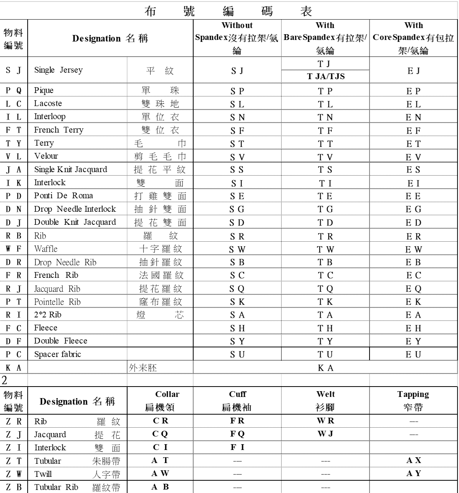
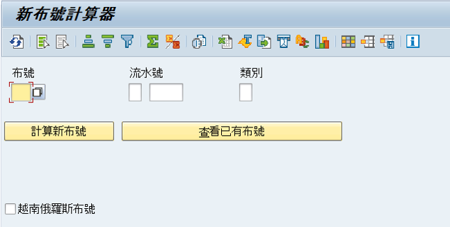
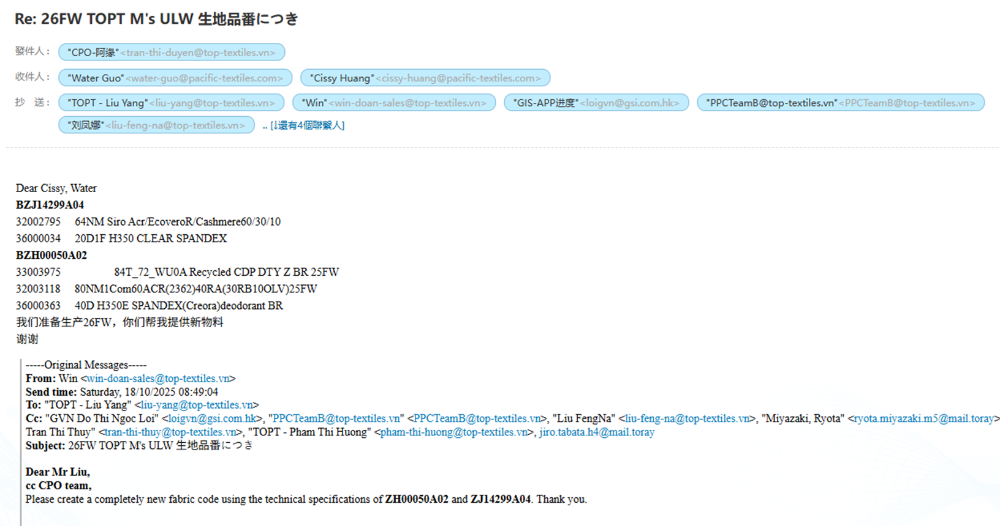
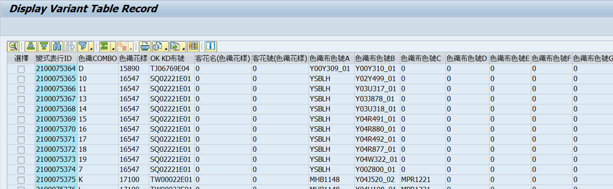
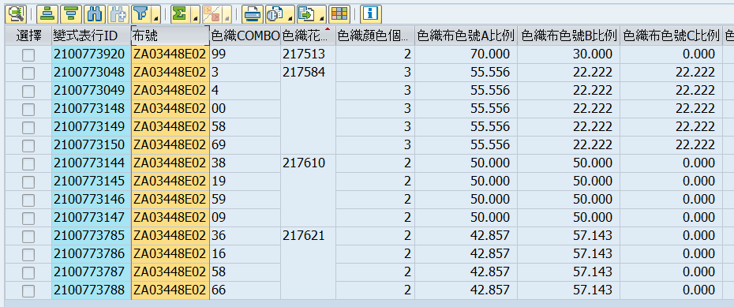
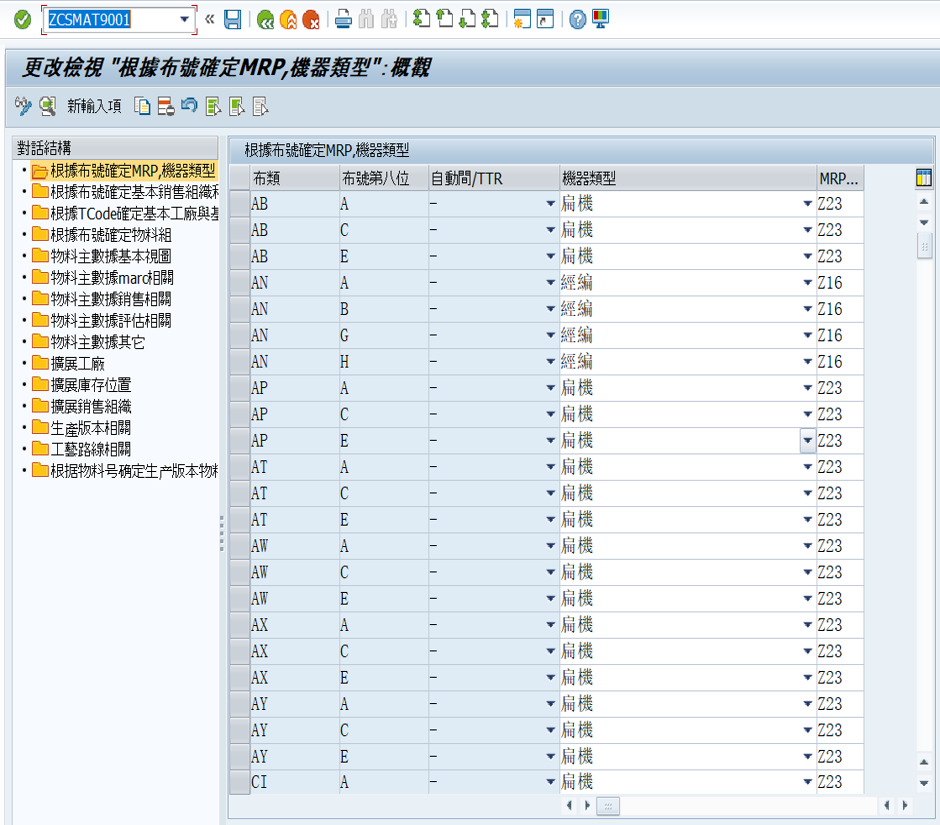
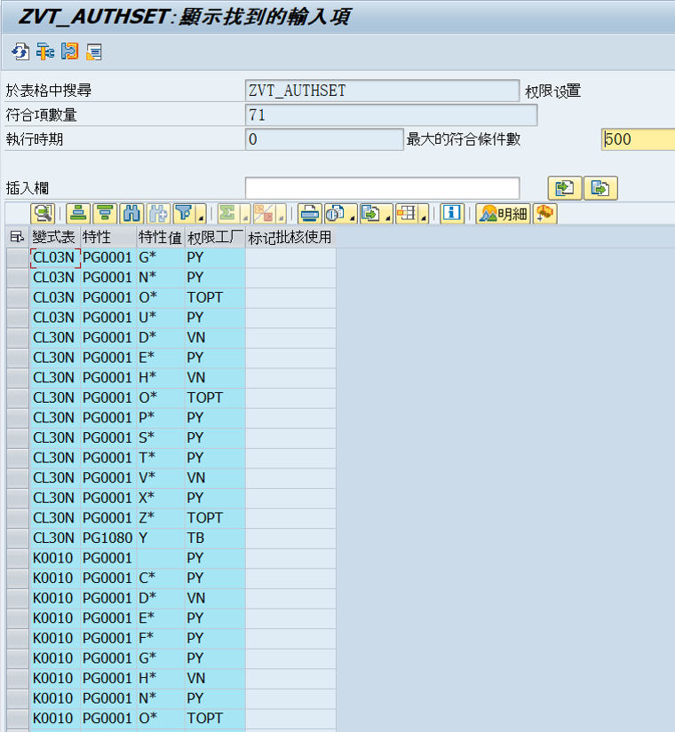

🧵 TOPT · 物料主数据
操作指引 · 培训教材 v1.0
Git 部署就绪
📁 图片已加载
📋 目录 4 章节
- 一、创建纬编物料主数据
- 二、创建经编物料主数据
- 三、ECC-APO数据传输问题
- 四、特殊业务流程
一 创建纬编物料主数据
🧺 净色 · 花灰 · 印花布
⚡ 第一步：使用 ZSOHCS008 新布号计算器，按布号编码规则获取新布号。
备注：TOPT 统一用 PTL 规则 (T,S) 计算，后更改为 Z,O。USA 布号以 "1" 开头。

规则表 图 1-1-1 编码规则

ZSOHCS008 图 1-1-2 计算器
⚡ 第二步：使用 ZSOHVT001 · 变式表 K0010 新增布号资料（通常复制创建）。

K0010 图 1-1-3 ZSOHVT001
⚡ 第三步：使用 ZSOHCS200C · 主数据导入
⚠️ 注意：TORAY 物料号每年变更，纱线物料号由原料部提供。

导入图 1-1-4 ZSOHCS200C

TORAY图 1-1-5 年度更新
⚡ 第四步：使用 ZSOHPP024 · 打印板卡

板卡打印图 1-1-6 ZSOHPP024
🎨 色织布 · 特殊配置
🔹 第一步：K0041 变式表 维护

K0041 图 1-1-9
🔹 第二步：K0040 变式表 维护

K0040 图 1-1-10
🔹 第三步：使用 ZSOHPP106 · 维护模数纸
📐 模数 = CPI × 间距（寸），机上穿纱必须为整数。

模数维护图 1-1-11

模数纸图 1-1-12
📌 模数注意事项：
- 排间的利用率尽量 75% 以上。
- 2模1循环或3模1循环 → 预模数需为2或3的倍数（不仅仅取整）。
- 超过织机最大模数 → 换自动间布号。
⚙️ 纬编物料主数据 · 相关配置

纬编配置图 1-1-7

纬编参数图 1-1-8
二 创建经编物料主数据
📌 经编物料主数据流程与纬编类似，但需注意经编专用变式表与模数规则。
具体步骤参照纬编，使用经编专用事务代码 (如 ZSOHCS008E 等)。
经编专用布号计算示例
K0020变式表示例
经编特殊提醒： 经编模数通常与纬编不同，需参考经编工艺标准。
三 ECC-APO 数据传输问题处理
🔄 常见问题：物料主数据在ECC与APO间不一致、传输失败、或数据延迟。
- 检查 CIF 模型 是否激活
- 确认物料主数据扩充视图 (APO 相关)
- 使用 ZSOHAPOCHECK 进行一致性检查
CIF监控示意
APO日志错误示意
⚡ 快速处理： 若传输失败，重新执行 ZSOHAPOSYNC 或手动修复物料主数据。
四 特殊业务流程
🔄 复制创建
通过 ZSOHVT001 复制相似物料，快速创建新布号，减少重复输入。
📦 批量导入
使用 ZSOHCS200C 批量导入主数据，支持 Excel 模板 (需预先转换)。
🧾 模数纸打印
ZSOHPP106 不仅维护，还可直接打印模数纸用于车间穿纱。
📎 特殊流程还包括：USA 布号 (以1开头) 单独管理，以及 TORAY 年度物料号 更新联动。